Getting Started¶
CANVAS has an interesting design, that at first might look a bit confusing to you. Once you understand some of the basic components, you will be able to easily find your way around more advanced scenarios to get your job done with CANVAS.
This guide has been broken into two parts. The first part, and where you’ll likely spend most of your time, is the CANVAS GUI. It is developed based on GTK, to provide a cross-platform interface. GUI is not the only way to use CANVAS though.
The second part looks at other ways to interface with CANVAS. CANVAS provides a command-line interface and an XML-RPC interface which is designed to be used by modules and code rather than a human user. The concept of command-line interface in CANVAS might look a bit different than other tools such as Metasploit Framework. In CANVAS, you can run most of the modules and exploits independently! It means you would not need to load the entire framework, just to run a small command or tool from it.
Let’s continue with the CANVAS GUI.
CANVAS GUI¶
The most convenient way to start using CANVAS and run modules and exploits, is from its graphical user interface. To access the CANVAS GUI, you run a batch file or shell script, depending on what OS you are using, from the CANVAS root folder:
- On windows ::
- c:CANVASruncanvas.bat
- On Linux \ OSX ::
- $ sudo sh runcanvas.sh
If all required dependencies are satisfied, you will see messages like the following image, and then a series of information about loaded network interfaces. If this is the first time you lunch CANVAS you will have to agree with Immunity CANVAS license agreement before you are allowed to continue.
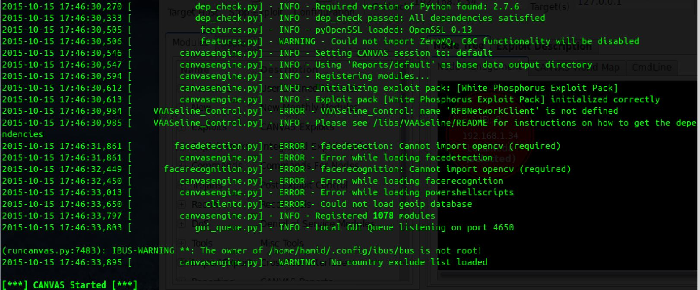And finally the GUI will be displayed:
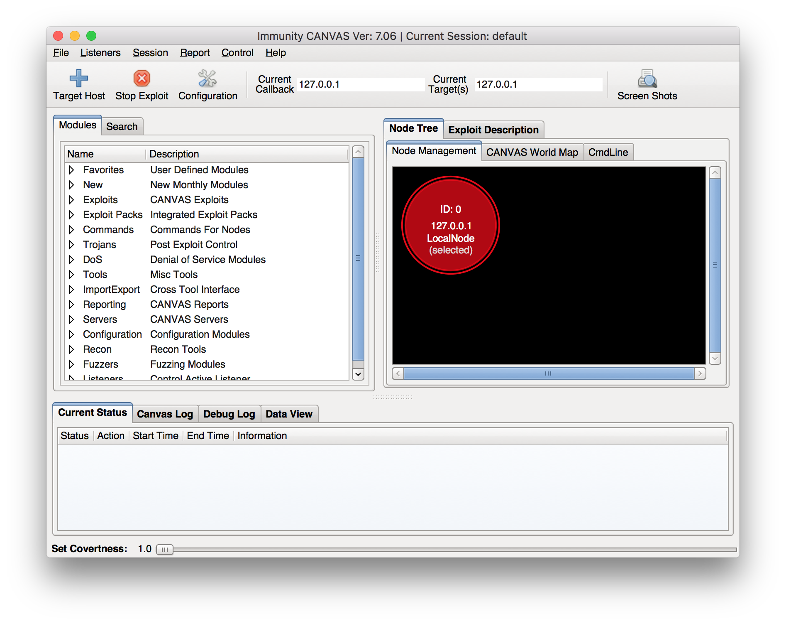You may have noticed that sudo was used to run the script. This is not mandatory, however it is recommended to lunch CANVAS with elevated privileges. This allows CANVAS to perform actions such as port scanning and network sweeping in a much faster way by using raw sockets and allows CANVAS to monitor and capture network traffic by passively monitoring broadcasted network traffic to builds a list of all active hosts in the network which is saved as knowledge. Running CANVAS with elevated privileges is mandatory if you want to have your modules or call back node listeners to bind to port numbers below 1024. Listening on TCP ports 53 or 443 are common ways to bypass corporate policies, requires such privileges.
Tip
CANVAS has a configuration file, canvas.conf, that can be used to edit some of the CANVAS default behaviours. This text file is located in the root of the CANVAS installation path. Some of the more useful options that you might want to modify are default listener ports, interfaces, and whether you want CANVAS to watch ARP traffic or not.
Warning
On Windows, the first time CANVAS is run, a Windows firewall notification window about the Python.exe process trying to access network may pop up. You should confirm this access, otherwise CANVAS will not be able to work properly. Other alternatives are to whitelist python process and used ports on windows firewall, or completely disable the windows firewall on Windows.
Selecting Interface & Target¶
After CANVAS is launched, the initial GUI window is displayed. As highlighted in the following image, there are two text boxes labeled Current callback and Current interface. These two options are not manually editable and are instead modified by doing other actions in CANVAS which will be described throughout this document.
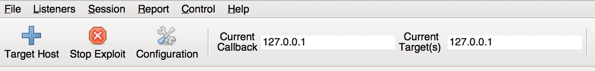The Current Callback option shows the interface that CANVAS is currently listening on and receives listener connections on. If you have VMware or VirtualBox software installed on your machine, or happen to have more than one network interface, you should make sure that this options shows the correct interface’s IP address.
Change Network Interface¶
To change the default interface, in the CANVAS GUI there is a tab labeled Nodes Tree * where you manage all of connected CANVAS nodes. By default the host that CANVAS is running on is selected as the default node, thus the default listening interface is also one of CANVAS host’s interfaces. To change the default interface, right-click on the local node (the red circle), and from the menu select the interface to use. After selecting the interface, the *Current Interface textbox in the interface is also changed. The create interface option in the context menu is used to in more complex networking situations, such as when using NAT and port-forwarding. This will be covered in the advanced usage section.
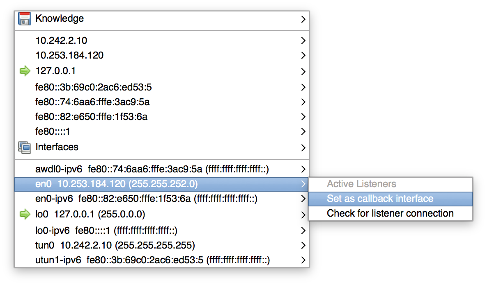Tip
Canvas is fully IPv6 compatible! It means you can also set your IPv6 interface address as the default listener, or attack IPv6 targets.
Add Targets¶
The Current Target which all executed modules will point at when CANVAS is first started is the local host 127.0.0.1. To add new targets click on the Target Host button as highlighted in below image. In the Add a host window enter the IP address or Hostname of the desired target. Once a target is added, it is also selected as the Current Target.
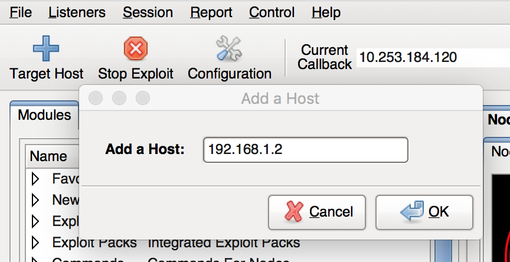To select multiple targets, right-click on the CANVAS host local node in Node tree tab and from the list of IP addresses in the knowledge list, click on one and choose select as additional target. Now any module or exploit will simultaneously run on all selected targets. This is specially useful when testing a specific exploit or running a certain command against multiple hosts in the targeted environment.
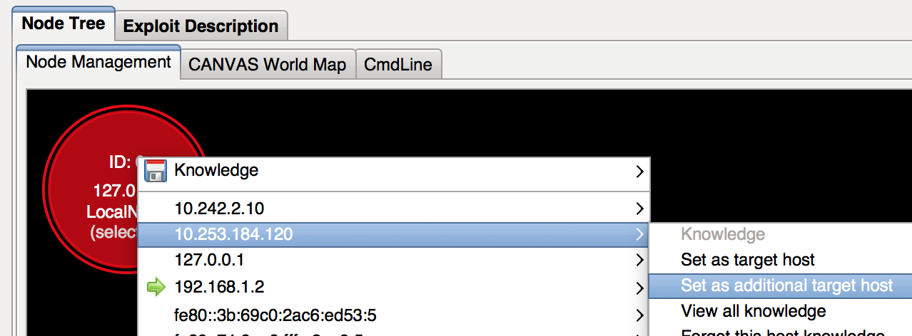After the target is select, a ‘+’ sign and the IP address of the target will be added to the Current targets box and a Right-click on the LocalNode will show that all selected targets have a green arrow next to them in the context menu.
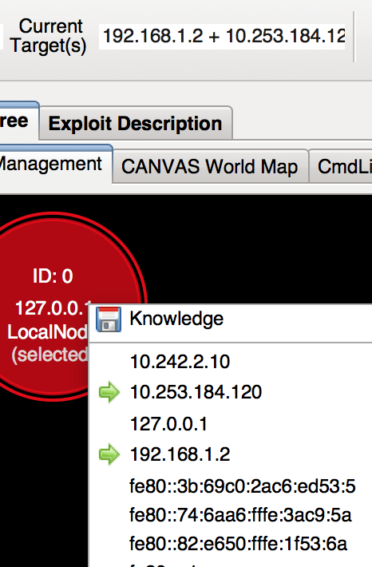Another way to add or remove target hosts to Canvas, is through the knowledge context menu. The knowledge menu can also be used to load a list of targets from a file. Targets need to be specified one per line in the input text file.
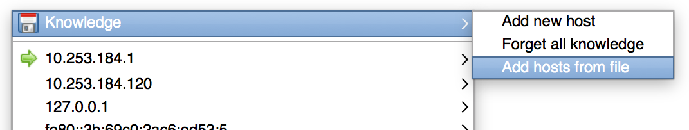Tip
Once an exploited remote host appears in your nodes list and has a running MOSDEF listener, you can attack hosts that are accessible only from the exploited host. This feature is called Pivoting.
Activities and Logs¶
At the bottom of the GUI, there are four tabs, each showing different set of information. These tabs display a great deal of information about and should be monitored during usage. Note that some of the executed modules show their results only in these tabs.
- Current Status
This tab shows the status of previous and currently running modules as they start, progress, succeed or fail. Some modules start child modules which will be displayed in a hierarchal tree form in the same tab. Messages are color coded, so you can easily identify the current status of each module.
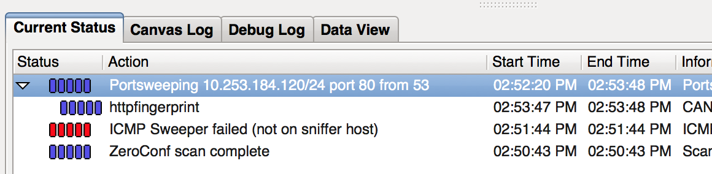- Gray: The module or one of child modules is still running.
- Blue: The module has finished without error.
- Red: The module has finished with an error or failed.
To stop a running module, select it from the list shown in this tab and click on the Stop button at the top of the Canvas interface. If the module has called other sub-modules, all of the child modules will be also stopped. If you select one of the running child modules only, that specific module will be stopped and it will not affect the parent module. In most cases it is not recommended to manually stop child modules that are called automatically.
Stopping a multi-threaded module usually takes some time before all threads are gracefully stopped. This is specially the case when stopping password guessing modules such as ssh_brute.
- Canvas Log
This tab shows the result of every action taken within CANVAS, including executed modules. For example when running an exploit module, this tab will provide information as the various steps of the exploitation proceed. The command modules typically output their results here. The information shown in this tab is often also what is shown in the terminal window that CANVAS was started from. Additionally, normal errors will be printed in this tab, unless debug mode is enabled for more detailed error logging.
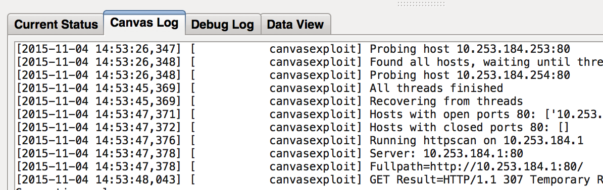- Debug Log
Some times CANVAS fails during execution of modules or particular commands, or your exploit attempt may fail against a specific target. CANVAS logs a more detailed level of information in this tab, making it a good place to start looking if a selected module fails. When contacting Immunity for support issues, we often ask you to send us the results showing here to identify the root of problems. To enable CANVAS debug mode there are two options. The easiest and recommended method is to create an empty file called .debug by running the command touch CANVAS_ROOT/.debug on non Windows systems, or in Windows, create a blank file with .debug as the name. The second option is to modify the CANVAS configuration file and change the logging level to debug. The configuration file is named canvas.conf and is located at the Canvas root directory.
# logging default level [debug, info, warning, error, critical] logging_default_level = info
Once done, a reload of CANVAS will start it in debug mode.
- Data View
- This tab shows any data output that a module might generate that meant to be presented to the user beside the standard verbose output.
CANVAS Modules¶
Modules in Canvas are categorized based on type of module, type of attack (Local,Remote,Web,Clientside,DoS) and Operating System they can be run against. The different types of attacks and what they mean are explained here.
Under the hood, most of the modules are categorized within a hierarchy in the exploits directory under the CANVAS root directory.
In the Module tab, you can find the following category of modules:
- Favorites
- Here you will find some of the favorite modules that you can start playing around with, or are most common to be used. For example the ever reliable MS08_067 exploit module to exploit an older Windows installation, to gain a MOSDEF node and start experimenting with Canvas features.
To add modules to this list, edit the file CANVAS_Root\\Resources\\favmodules.txt file and reload Canvas.
New
This section is updated with every new realease of CANVAS to highlight the latest modules and exploits that were added. This is a quick way to find the new additions to the latest version.
Exploits
Exploit modules are arranged and categorized based on the vector, followed by the operating system. This makes it quick and easy to narrow down a list of exploits, once the Operating System of the target has been identified. A complete online list of CANVAS exploit modules can be seen here.
Exploit Packs
Canvas built-in modules are not the only inventory of tools and exploits that you can use. There are multiple 3rd party companies that provide exploit-packs for CANVAS. This allows you to boost your Canvas capabilities by purchasing and installing those packs to be able to attack even wider ranges of softwares and services using Canvas. Moreover, some of the 3rd party exploit providers offer 0day exploit modules, which is a great way to challenge your network security with real-world threats. You can find more detailed information about available 3rd party exploit packs from here. Right now there are 10 3rd party exploit packs available for Canvas, providing tens of new exploit modules and tools that are otherwise not available in standard Canvas. Just like Canvas, exploit packs are also usually updated on a monthly basis.
Tip
If your team requires latest updates and exploits for recently published vulnerabilities, Immunity provides a special service called Early-Updates which allows access to the latest exploits as soon as they are investigated by Immunity researchers. Having an Early-Update means no longer waiting for the next official release date; you can download new exploit modules as they are be developed by Immunity.
- Commands :
- This group of modules, also categorized by OS type, is used to perform a series of common actions against the active node. Modules in this section are non-destructive and safe to try, which means none of them will try to exploit any issues that would risk the stabilty of your gained access. These modules often use the native operating system API to perform actions ranging from enumeration of information to running simple commands such as listing directory contents or executing a process. There are also a series of commands available to perform attack techniques such as pass-the-hash, taking screen shots, running a keylogger against an active process such as Internet Explorer, dumping various sets of secret information from Windows, and much more!
- Trojans :
Tojans allow you maintain access to a host you have already gained access, by either installing presistence MOSDEF trojan, or by installing the rootkit (HCN) that is included in the CANVAS. Among the modules are MOSDEF callback trojans that communicate over ordinary protocols such as HTTP, DNS or ICMP (HCN Rootkit only). Use of these protocols allow you to bypass most of the strict corporate firewall policies and avoid detection. A more covert communication trojan in CANVAS is a a module to generate call back trojans that piggy back Mozilla Thunderbird as a C&C server! To make it even more covert, this trojan module applies steganography to hide communication messages. To our knowlesge, Immunity CANVAS is the only product that provides such covert communication channel with targets. Read more details about each of trojan modules in the Module Decription tab.
Tip
If you require even more advanced capabilities and features to test how your organisation reacts and responds to APT and covert and targeted attacks (such as the ones you often read about used to attack large financial companies or governments), you might want to contact our sales about our other product INNUENDO.
Recon
Recon modules are focused on the tasks such as footprinting and detection of services or operating system version, as well as remote enumeration of data where possible, from relevant services. When a remote exploit against Windows OS is launched, often the OS version and language detection module from this category is called, to make sure correct target and settings are selected by the exploit module, avoiding unstable or unsuccessful exploit attempts. The TCP/UDP port scanning modules are also here.
DoS
As the name of the category implies, Denial of Service exploit modules are listed in this category. These are the modules that are intended to crash a remote service, cause BSOD or make the system reboot. When using them in a penetration test against production systems make sure your clients are informed in advance about your DoS attempts.
Tools
This category contains modules that are developed based on CANVAS internal libraries and other modules, to perform a series of automated tasks. For example, the massattack or autohack modules will run a number CANVAS modules automatically against a single host or enire network range. Modules useful for password guessing attacks against SSH, Telnet, SBM or Oracle are also found here.
**Import & Export **
Canvas supports importing scan results from a number of third party security assessment tools such as Nesssus, Qualys, ADVS and Nmap. Once vulnerabilities or available services are identified using any of these tools, the results can be imported into CANVAS make this information available to be used by modules in CANVAS to exploit the host. When penetration testing a large network, it is often faster to do the initial port scan and service detections using Nmap and import the results into CANVAS. If you use an unsupported vulnerability scan in your enterprise network and would like to have it supported by Canvas import functionality, feel free to contact us!
Reporting
- From the moment CANVAS is started until it is closed, every action performed in CANVAS is logged and time stamped. CANVAS can export the session activities into an Open-Office odt document format. This generated report includes the following items and sections:
- Summary Tables
- Attempted Exploits
- Timeline
- Successfull Attacks
- Unsucces Attacks
- Hosts
- Appendix (Attack outputs, Exploit descriptions, Severity Level reference)
For example if you run a client-side attack campaign vis Canvas clientd module, you can generate reports with pie charts and graphs showing the success rate of your campaigns, as well as details about successfull exploits.
Servers
This category contains CANVAS modules that are used to operate as a server for client-side attack modules (HTTP or SMB server). It also has modules to configure CANVAS as a proxy server for MOSDEF listener connections that are encapsulated and tunneled over DNS or ICMP protocol. Another interesting module in this section is the SpikeProxy which can be used to relay your HTTP traffic from a remotely exploited host and as a lightweight proxy application to test web-applications for common issues by manually creating and modifying request/replies.
Configuration
Here you can find the CANVAS basic configuration module. This module can be also accessed directly with the Configuration button in the GUI. The module remark_in_log is also in this category. The module allows time stamped custom comments and notes to be inserted into the Canvas log.
Fuzzers
Two basic fuzzers for MS-RPC endpoints and TFTP are included in CANVAS. These fuzzers are based on the famous SPIKE fuzzer developed by Immunity, which has found a number of critical remotely exploitable vulnerabilities on Windows.
Listeners
This module brings up the Listener-Shell GUI, which if you have already have a live exploited node, will automatically connect to the active node. The listener-shell allows quick access to features commonly provided by MOSDEF such as listing files, upload/download, spawning a new process or running commands on the exploited node.
Tip
Canvas provides a search option that would help you quickly list and select specific modules based on their names or any part of the description of modules. For example it is possible to do a search for all modules that target Microsoft IIS or search for modules related to a specific CVE.
CANVAS Command-line¶
As comfortable as it is to use the powerful CANVAS GUI, there will be some times when it is necessary to run CANVAS or a specific module from a terminal or command-line interface, for example over SSH. Most of the features provided through the GUI can be used from the command-line interface. It is possible to directly call modules (which are basically Python scripts) and provide the parameters and switches they required. We will cover some examples for that later, but that is not the only way to use the CANVAS command-line interface.
To get information about command-line switches available for a module, run that module from a terminal without any parameter. For example, to get list of switches for the http_fingerprint module, run the following command
$ cd Canvas_directory
$ python exploits/recon/http_fingerprint.py
CANVAS also provides a tab in its GUI, that allows you to interact with Canvas by typing commands.
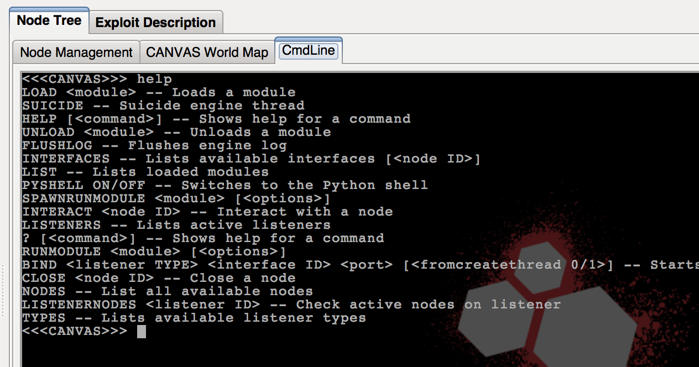One of the benefits of having this CMDline interface in the GUI, beside its standard commands, is the Python shell which allows direct interaction with CANVAS objects from Python. To enable the Python shell run pyshell on in the CMDline tab in the GUI.
CANVAS Listener¶
Once you successfully exploit a remote machine via any of the available modules, CANVAS automatically opens a news ‘Listener-shell’ window, which is basically an GUI for interacting with MOSDEF to perform various actions. This is more powerful than a a simple remote shell, providing the ability to browse files on the remote machine, upload or download files, pipe and run OS commands or spawn new processes. The following image shows a brief visual guide for the listener-shell window.
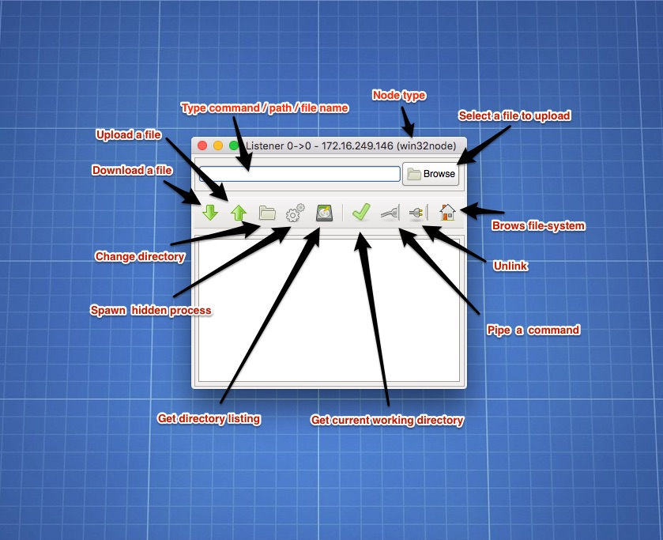The listener-shell can be of different types, depending on the machine, service or the (web) application you are exploiting. Therefore some of the functions of the listnener-shell might not be available on all node types.
Tip
If you mistakenly close the Listener window, Canvas still maintains the session to the exploited machine. You can select the machine in the Node tree by clicking on it, and press “L” to open a new Listener window linked to the selected machine.
Tip
You can convert your less-features Listener nodes such as PHP, Java or Unix Shell to the more powerful MOSDEF type, by selecting the target machine, and then running the ‘converttomosdef’ module. This module automatically compiles and uploads a MOSDEF call-back trojan to the node and opens a new listener-shell window.